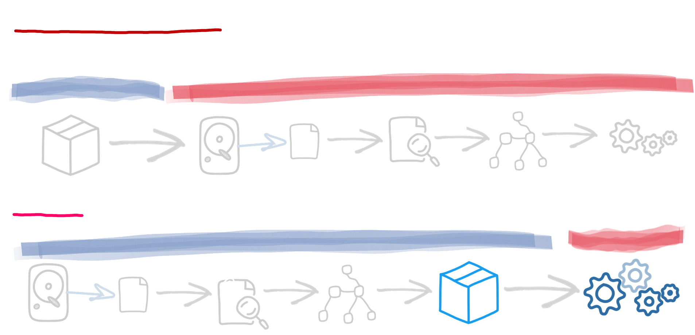

El contenedor primero
Las aplicaciones de Quarkus están optimizadas para un uso de memoria bajo y tiempos de inicio rápidos.
Desde el principio, Quarkus ha sido diseñado en torno a una filosofía de "contenedor primero". Lo que esto significa en términos concretos es que las aplicaciones de Quarkus están optimizadas para un bajo uso de memoria y tiempos de arranque rápidos de las siguientes maneras:
Procesamiento del tiempo de construcción
La idea central de Quarkus es hacer en tiempo de compilación lo que los frameworks tradicionales hacen en tiempo de ejecución: análisis de la configuración, escaneo del classpath, conmutación de funciones basada en la carga de clases, etc.
Todo el procesamiento posible se realiza en el momento de la compilación; de este modo, la aplicación sólo contiene las clases utilizadas en tiempo de ejecución. En los frameworks tradicionales, todas las clases necesarias para realizar el despliegue inicial de la aplicación permanecen durante toda la vida de la misma, aunque sólo se utilicen una vez. Con Quarkus, ¡ni siquiera se cargan en la JVM de producción! Quarkus no se detiene aquí. Durante el proceso de construcción, prepara la inicialización de todos los componentes utilizados por su aplicación. El resultado es un menor uso de memoria y un tiempo de inicio más rápido, ya que todo el procesamiento de metadatos ya se ha realizado.
Reducción del uso de la reflexión
En la medida de lo posible, Quarkus intenta evitar la reflexión, reduciendo el tiempo de inicio y el uso de memoria. Durante el procesamiento en tiempo de construcción, las extensiones pueden analizar el código de la aplicación y las clases disponibles en el classpath y reemplazar las llamadas de reflexión con invocaciones regulares. El uso de proxies dinámicos también se evita mediante la generación de proxies personalizados en tiempo de construcción.
Arc, el marco de inyección de dependencia utilizado por Quarkus, elimina todas las llamadas de reflexión y deduce el gráfico de inyección en tiempo de construcción. Así, cuando la aplicación se inicia, no hay búsquedas costosas; ¡ya está hecho!
Soporte de primera clase para imágenes nativas de GraalVM
El soporte de ejecutables nativos de GraalVM ha sido una parte esencial del
diseño de Quarkus desde el principio. Cuando una aplicación se compila a un
ejecutable nativo, se inicia mucho más rápido y puede ejecutarse con un
montón mucho más pequeño que una JVM estándar. El compilador nativo utiliza
técnicas agresivas de eliminación de código muerto para incrustar sólo las
partes de la JVM y las clases que son absolutamente necesarias para su
aplicación. Quarkus hace que la construcción de ejecutables nativos
optimizados sea muy fácil. El enfoque en tiempo de construcción permite a
Quarkus recoger suficientes metadatos sobre su aplicación para ajustar la
compilación. ¡No hay flag
-H:+ReportUnsupportedElementsAtRuntime, no hay fallback, no hay
compromiso!
Imagen nativa previa al arranque
Pre-arrancamos tantos frameworks como sea posible durante la compilación nativa de una aplicación Quarkus. Esto significa que el ejecutable nativo resultante ya ha ejecutado la mayor parte del código de arranque y ha serializado el resultado en el ejecutable: ¡un arranque aún más rápido!
Kubernetes, pero también bare metal
Todas las técnicas que permiten reducir el uso de la memoria y proporcionar tiempos de arranque más rápidos no sólo son ventajosas en los contenedores. Incluso en bare metal, reduciría la presión de la memoria, y siempre es agradable no tener que esperar 10 segundos para ver tu aplicación en funcionamiento.
Cuando se diseñó Quarkus, no nos centramos únicamente en los contenedores, sino también en el despliegue de aplicaciones Quarkus en orquestadores de contenedores como Kubernetes. El procesamiento en tiempo de construcción de Quarkus también genera los metadatos de Kubernetes, por lo que su aplicación está lista para ser desplegada en Kubernetes. Las capacidades de tiempo de ejecución, como las comprobaciones de salud y las métricas, están expuestas de forma inmediata. Quarkus recoge todos los metadatos necesarios en tiempo de construcción para crear el descriptor de despliegue de Kubernetes y producir una imagen de contenedor. Una sola línea de comandos puede desplegar su aplicación en su clúster de Kubernetes.